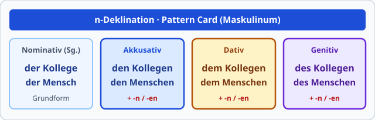

Schwache maskuline Nomen (n-Deklination)
Mit einem KI-Tutor lernen
Ein KI-Tutor erklärt dir diese Seite und hilft dir bei den Aufgaben. Wähl deinen Assistenten:
Mit Claude öffnen Mit ChatGPT öffnen Mit Mistral Vibe öffnen
Du nutzt dein eigenes Konto beim Anbieter. Der Assistent ist kein Angebot von lernapps.net: lernapps liefert nur Inhalte und Aufgaben. Die Wahl gilt für alle Seiten, nur auf diesem Gerät.
Die Musterkarte für schwache maskuline Nomen
Bei einem Nachbarschaftsfest in Lindenberg lernt Peter einen Kollegen von Herrn Weber, den Nachbarn und einen Studenten kennen. Eine besondere Gruppe maskuliner Nomen — die n-Deklination — hängt in allen Fällen außer Nominativ Singular ein -n oder -en an!

© CC0-1.0Nur im Nominativ Singular steht die Grundform; in Akkusativ, Dativ, Genitiv (und Plural) kommt -n/-en dazu.
| Deutsch | Beispiel · Hinweis | Englisch |
|---|---|---|
| der Mensch, den/dem/des Menschen | person / human being | |
| der Kollege, den/dem/des Kollegen | colleague (male) | |
| der Student, den/dem/des Studenten | university student (male) | |
| der Nachbar, den/dem/des Nachbarn | neighbor (male) | |
| der Junge, den/dem/des Jungen | boy | |
| der Herr, den/dem/des Herrn | gentleman / Mr. | |
| der Name, den/dem Namen, des Namens | Im Genitiv kommt noch ein -s dazu: des Namens. | name |
Übung
Aufgabe
Nominativ oder anderer Fall? Wähle die richtige Form.
- The boy (der Junge, nom.) plays football. → … spielt Fußball.
- Peter greets Herr Braun (der Herr, acc.). → Peter grüßt … Braun.
- We help the person (der Mensch, dat.). → Wir helfen dem ….
Lösung
- Der Junge spielt Fußball.
- Peter grüßt Herrn Braun.
- Wir helfen dem Menschen.
Im Nominativ Singular bleibt die Grundform (der Junge); im Akkusativ, Dativ und Genitiv kommt -n/-en dazu (Herrn, dem Menschen).
Aufgabe
Ergänze die richtige Form des schwachen maskulinen Nomens.
- Peter meets a colleague (der Kollege, acc.) of Herr Weber. → Peter trifft einen … von Herrn Weber.
- Lukas helps the neighbor (der Nachbar, dat.) in the garden. → Lukas hilft dem … im Garten.
- That is the backpack of the student (der Student, gen.). → Das ist der Rucksack des ….
- Do you know the name (der Name, acc.) of the street? → Kennst du den … der Straße?
Lösung
- Peter trifft einen Kollegen von Herrn Weber.
- Lukas hilft dem Nachbarn im Garten.
- Das ist der Rucksack des Studenten.
- Kennst du den Namen der Straße?
Schwache maskuline Nomen wie Kollege, Nachbar, Student, Mensch, Junge, Name erhalten im Akkusativ, Dativ und Genitiv -n oder -en.
Aufgabe
Lösung
der Lehrer (den Lehrer, dem Lehrer, des Lehrers) richtige Antwort
Richtig! *der Lehrer* ist ein reguläres maskulines Nomen (Genitiv *des Lehrers*, kein *-n* im Akkusativ/Dativ).
der Mensch (den Menschen, dem Menschen, des Menschen)
*der Mensch* ist ein klassisches Nomen der n-Deklination.
der Kollege (den Kollegen, dem Kollegen, des Kollegen)
Maskuline Personen auf *-e* wie *der Kollege* oder *der Junge* gehören zur n-Deklination.
Zur n-Deklination gehören vor allem maskuline Lebewesen auf *-e* (*Kollege, Junge*) sowie feste Wörter wie *Mensch, Student, Nachbar, Herr*.
Aufgabe
Lösung
Sie gilt nur für bestimmte maskuline Nomen. richtige Antwort
Richtig! Feminine und neutrale Nomen (außer dem Sonderfall *das Herz*) gehören nicht dazu.
Nur im Nominativ Singular steht die Grundform ohne -n/-en. richtige Antwort
Richtig! In Akkusativ, Dativ, Genitiv und Plural steht *-n* oder *-en*.
Alle maskulinen Nomen bekommen im Akkusativ ein -n.
Nein, normale maskuline Nomen wie *der Tisch* oder *der Lehrer* bleiben im Akkusativ unverändert (*den Tisch, den Lehrer*).
Die n-Deklination betrifft eine klar begrenzte Gruppe maskuliner Nomen und fügt in allen Fällen außer Nominativ Singular *-n/-en* hinzu.
Fehler gefunden oder eine Idee für diese App?